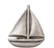

Prototipo · no es la página pública
Cada día, una pregunta te lleva un paso más lejos.
Llegas a un lugar, respondes una pregunta y te llevas una herramienta y un recuerdo. Después sigues caminando.

La imagen resume la escena: una viajera pasa de una pantalla de la app a la siguiente.
01 · La práctica diaria
Algo pequeño. Algo que sí puedes usar.
No necesitas resolver tu vida hoy. Unos minutos, una situación concreta y un siguiente paso.
Pruébalo aquí con un ejemplo.
 Una práctica de ejemplo
Una práctica de ejemplo
Alguien de tu familia te pide dinero. Quieres ayudar, pero todavía no sabes cuánto puedes aportar.
¿Qué podrías decir antes de responder?
Haz espacio antes del sí. Decir cuándo vas a responder te permite revisar tus posibilidades sin prometer algo que aún no sabes si puedes cumplir.
Revisa antes de comprometerte. Ese sí deja la organización para después. Puedes editarlo: «Déjame revisar cuánto puedo aportar y mañana te respondo».
Elige una frase para ver la herramienta.
Ejemplo guiado. Tu respuesta no se envía ni se guarda.
02 · Seis áreas de tu vida
¿Por dónde quieres empezar?
Claridad financiera. Observa una decisión sobre tu dinero y prepara una regla que tenga sentido para ti.
Encontrar tu propósito. Reúne pistas sobre lo que te importa y diseña una prueba pequeña antes de decidir.
Confianza en ti. Reconoce lo que sí sabes y practica revisar una decisión con razones.
Recuperar tu energía. Observa qué te da energía, qué te cuesta y prueba un ajuste posible.
Amor y límites. Distingue lo que puedes ofrecer y prepara una petición o un límite concreto.
Ritmo diario. Prueba una señal y un siguiente paso para retomar una rutina cuando cambia tu día.

03 · Atlas, colección y kit
Un recuerdo del lugar. Una pista sobre ti.
- 01
Tu colección
Un recuerdo pequeño por cada parada.
- 02
Tu kit personal
Frases y herramientas para volver a usar.
- 03
Tu postal de la semana
Lo que te llevas del recorrido.
 Taza de Kioto
Taza de Kioto
Velero de Venecia Cantimplora de los Andes
Cantimplora de los Andes- Pulsera tejida
04 · Explorar
Para cuando quieres ir un poco más allá.
Un audio para escuchar, una guía para consultar, un taller para profundizar. A tu ritmo, y guardas lo que quieras retomar.
- Audios
- Videos
- Guías
- Talleres
- Empleos
La biblioteca y los empleos del prototipo son ejemplos.


05 · Círculos
Tu pregunta puede abrir una conversación.
Busca un tema que estés viviendo, comparte una pregunta o empieza por leer. Tú eliges cuándo participar.
- Vida universitaria
- Soy mamá
- Una nueva ciudad
- Amistades adultas
Perfiles y conversaciones de muestra. El prototipo no conecta con personas reales.
Tu próxima parada: algo para ti.
O prueba un día en el prototipo ↗
Versión de prueba · español e inglés